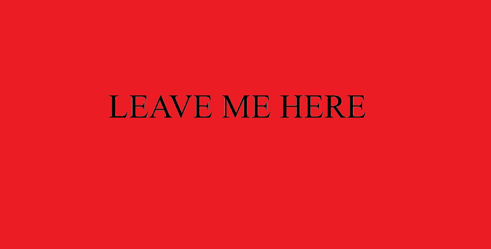
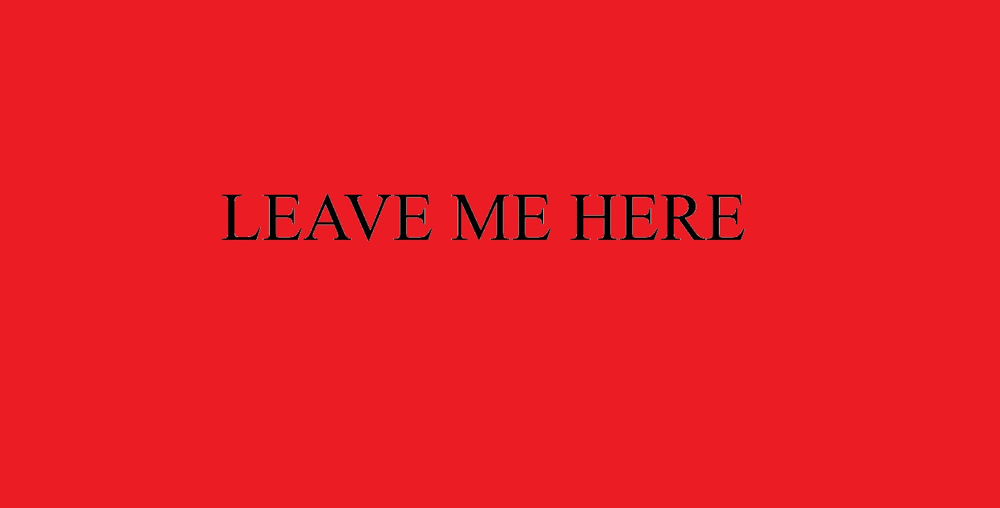

Congrats! You've found the hidden html page from my personal server! This is something not much of the public is able to access, consider yourself fortunate to find this website still up as it exposes my ip and location. Everyday the feds get closer to finding me to take me in. I'm Joking! This website holds two of the many favorite things i have to showcase. The first of this list is my interest in memes and other cool pictures. And the other one which is my favorite "secret" group of activists or organization. I do think that this page is too much of a dark and mysterious theme but whatevs look around, see if you find anything.
 

You might be wondering what this hypercolored frog means or if there is any interesting back story but thats a no. I'll just say that it represents my enthusiam toward memes and what not. To be more specific, funny or humourus images which are more often known as memes and don't necessarily have to be something dumb or terrible. It's all fun and games the way I see it and did I mention this is my favorite website for memes?
This site is actually an easter egg from my all time favorite TV show which at first I thought was creepy but I later on found it interesting and cool especially how there are two steps to getting the passsword to enter the emulated terminal of the website to further explore details from the TV show.